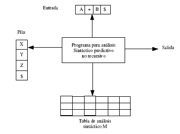
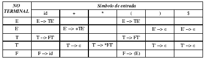
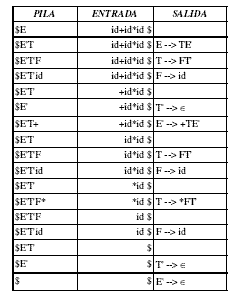

Se puede construir un analizador predictivo no recursivo explícitamente manteniendo una pila, en lugar de hacerlo implícitamente mediante llamadas recursivas. El problema durante el análisis predictivo esta en determinar la producción que debe aplicarse a un no terminal. El analizador sintáctico no recursivo busca la producción que debe aplicarse en una tabla.

El buffer de entrada contiene la cadena que se va a analizar seguida de $ (un símbolo utilizado para indicar el fin de la cadena). La pila contiene una secuencia de símbolos gramaticales con el símbolo $ en la parte de abajo, que indica la base de la pila. Al principio la pila contiene solo el símbolo inicial de la gramática encima del símbolo $. La tabla de análisis es una matriz bidimensional M[A,a], donde A es un no terminal y a es un terminal o el símbolo $
El programa toma en cuenta el símbolo en el tope de la pila (X) y el símbolo actual de la entrada (a), estos símbolos determinan las posibles acciones del analizador. Existen tres posibilidades:
- Si X=a=$, el analizador se detiene y avisa el éxito del análisis.
- Si X=a!=$, el analizador saca de X de la pila y mueve el apuntador de entrada al
siguiente símbolo. - Si X es no terminal, el programa consulta la entrada en M[X,a], esta entrada es una producción para X o una entrada de error. Si por ejemplo M[X,a]=X --> UVW, el analizador sustituye X del tope de la pila por WVU. Si M[X,a]=error, el analizador
llama a la rutina de recuperación de error.
Ejemplo
Dada la gramática con producciones:
E --> TE'
E' --> +TE' | ε
F --> (E) | id
la cadena w=id+id*id y la tabla de análisis

El algoritmo tendría el siguiente comportamiento

{kind=link}
{kind=link}
{kind=link}